Arlesega di Mestrino (PD) · dal 1936
Ranghinatori a cinghieper portattrezzi, trattori e motofalciatrici
Rivoltano l'erba, la mettono in andana e allargano l'andana. Li costruiamo ad Arlesega di Mestrino e li vendiamo tramite i nostri rivenditori, in Italia e all'estero.
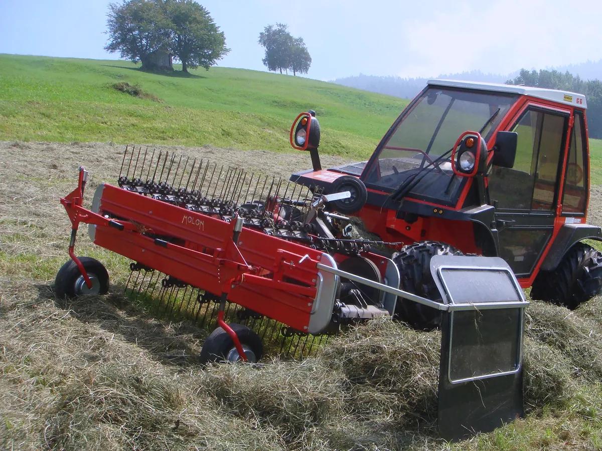
Le macchine
Ranghinatori, girelli e scopatrici
Produciamo ranghinatori a cinghie per trattori, motofalciatrici e motocoltivatori, girelli spandivoltafieno e scopatrici per trattori.
Altri modelli sono disponibili su richiesta del cliente.
Chiedete il vostro
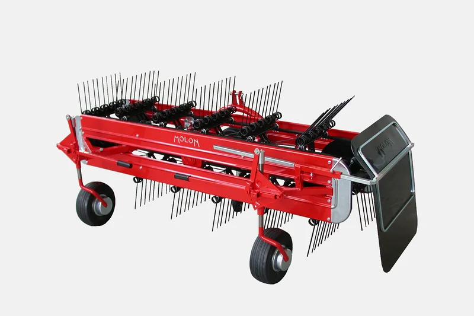
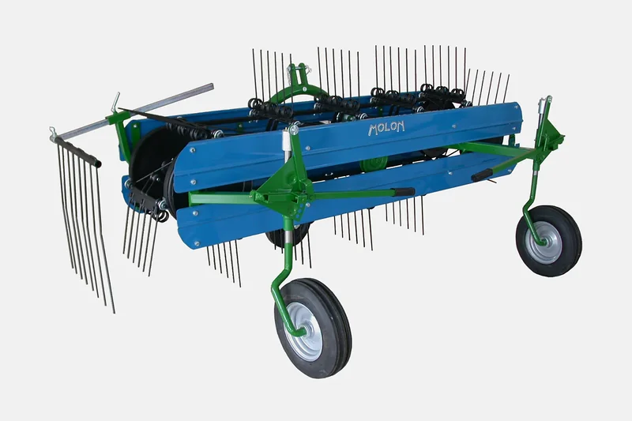
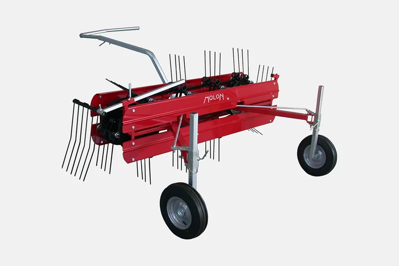
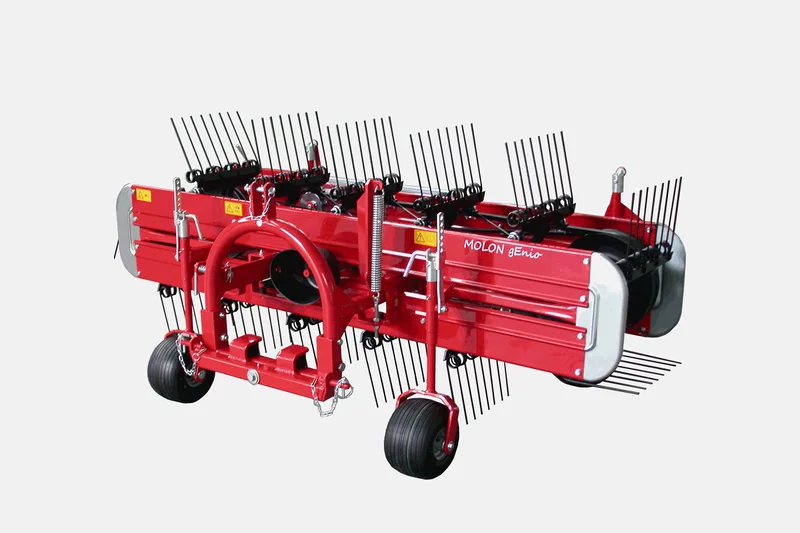
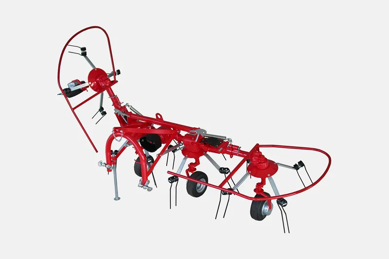
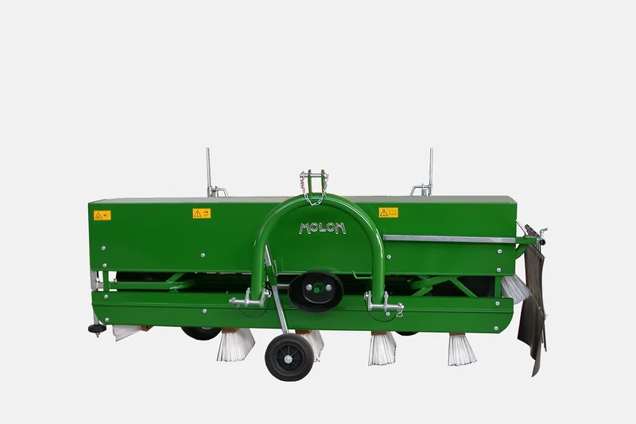
Ricambi
Macchina ferma? Chiamateci per il ricambio.
Per trovare il pezzo giusto ci servono tre cose.
- Il modello e l'anno, scritti sulla targhetta della macchina.
- Una foto del pezzo rotto: cinghia, pettine, dente doppio, cuscinetto.
- Il numero del pezzo sull'esploso, se l'avete.
Se non rispondiamo, mandate la foto con il vostro telefono a info@molonmachinery.com
Ranghinatori frontali per portattrezzi e trattori
Frontali, da 190 a 280 cm di lavoro
Il ranghinatore può essere collegato a qualsiasi trattore agricolo con presa di forza a 540 o 1000 giri/minuto.
Costruzione leggera ma robusta ed attacco molto vicino al trattore garantiscono un perfetto adattamento a qualsiasi tipo di terreno, anche a quello più irregolare.
- Versione PRO
- Tutti i componenti principali sono rinforzati.
- gEnio
- Appoggio su 4 ruote ballon, bilanciere e cerniera per seguire il terreno. Per tutti i frontali, 60 kg in più.
- Optional
- Bilanciere, triangolo, doppie ruote centrali o larghe, terza ruota piroettante, bandella idraulica.
Va sul vostro mezzo? Diteci marca, modello e presa di forza.
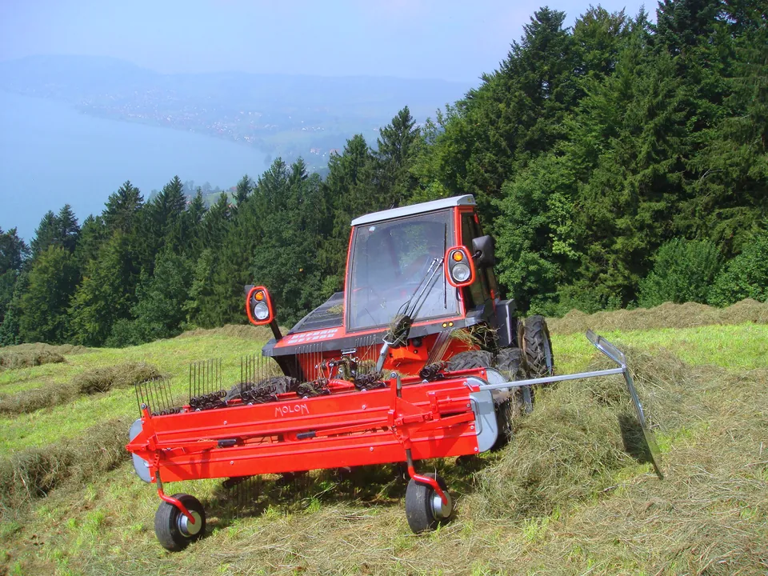
9 modelli frontali
Il 300 PRO lavora 280 cm; 320 cm è la larghezza massima. Altri modelli sono disponibili su richiesta del cliente. Per il prezzo rivolgetevi al rivenditore o chiamateci.
| Modello | Pettini | Doppi denti per pettine | Lavoro cm | Massima cm | Peso kg |
|---|---|---|---|---|---|
| 190 | 11 | 4 | 190 | 220 | 210 |
| 210 | 12 | 4 | 210 | 240 | 245 |
| 230 | 13 | 4-5 | 230 | 260 | 255-265 |
| 230 PRO | 13 | 5-6 | 230 | 260 | 285-295 |
| 250 | 14 | 4-5 | 250 | 280 | 290-300 |
| 250 PRO | 14 | 5-6 | 250 | 280 | 325-335 |
| 260 | 15 | 4-5 | 260 | 300 | 300-310 |
| 260 PRO | 15 | 5-6 | 260 | 300 | 330-340 |
| 300 PRO | 16 | 5-6 | 280 | 320 | 340-350 |
Ranghinatori posteriori per trattori
Posteriori, da 120 a 230 cm, attacco a 3 punti
Il ranghinatore può essere collegato a qualsiasi trattore agricolo con attacco a 3 punti.
Va sul vostro trattore? Diteci marca, modello e presa di forza.
- Cinghie
- 1 cinghia da 32 mm sul MINOR MINI 120, 2 su tutti gli altri.
- Ruote
- In gomma piena sul MINOR MINI 120, pneumatiche 3.50-8 sugli altri.
6 modelli posteriori
MINOR MINI 120, MINOR 140, 160.3D, 180.3D, 210.3D e 230.3D: da 85 a 240 kg.
| Modello | Pettini | Doppi denti per pettine | Lavoro cm | Massima cm | Peso kg |
|---|---|---|---|---|---|
| MINOR MINI 120 | 8 | 2 | 120 | 155 | 85 |
| MINOR 140 | 9 | 2 | 140 | 175 | 155 |
| 160.3D | 10 | 3 | 160 | 200 | 180 |
| 180.3D | 11 | 3 | 180 | 220 | 190 |
| 210.3D | 12 | 3 | 210 | 240 | 230 |
| 230.3D | 13 | 3 | 230 | 260 | 240 |
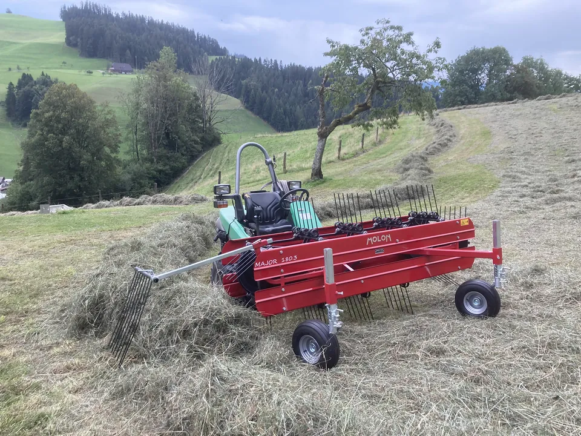
Ranghinatori per motofalciatrici e motocoltivatori
Per motofalciatrici, da 100 a 210 cm
I ranghinatori MOLON sono leggeri e maneggevoli e si applicano con grande facilità ai gruppi propulsori delle motofalciatrici e dei motocoltivatori.
Funzionano esattamente come i più grandi ranghinatori da trattore, spostando l'erba in modo delicato ed efficace. I comandi per lo sterzo e la regolazione dell'altezza di lavoro sono semplici e sicuri.
Va sulla vostra motofalciatrice? Diteci marca e modello.
- MINI1 cinghia, ruote di gomma piena, con sterzo o ruote piroettanti. 100, 120 o 140 cm, 80-90 kg.
- MIKY2 cinghie, ruote pneumatiche, altezza di lavoro regolata dal posto di guida. 120 o 140 cm, 140-150 kg.
- MAJOR2 cinghie, 2 o 3 doppi denti per pettine, con sterzo o ruote piroettanti. Da 120 a 210 cm, 120-200 kg.
10 modelli per motofalciatrici
MINI, MIKY e MAJOR, da 100 a 210 cm. Altri modelli disponibili su richiesta.
| Modello | Pettini | Doppi denti per pettine | Lavoro cm | Massima cm | Peso kg |
|---|---|---|---|---|---|
| MINI 100 | 7 | 2 | 100 | 140 | 80 |
| MINI 120 | 8 | 2 | 120 | 155 | 85 |
| MINI 140 | 9 | 2 | 140 | 175 | 90 |
| MIKY 120 | 8 | 2 | 120 | 155 | 140 |
| MIKY 140 | 9 | 2 | 140 | 175 | 150 |
| MAJOR 120 | 8 | 2 | 120 | 155 | 120 |
| MAJOR 140 | 9 | 2 | 140 | 175 | 130 |
| MAJOR 160 | 10 | 2-3 | 160 | 195 | 180-190 |
| MAJOR 180 | 11 | 2-3 | 180 | 210 | 185-195 |
| MAJOR 210 | 12 | 2-3 | 210 | 240 | 190-200 |
Come lavora un ranghinatore a cinghie
Per una buona fienagione
- 01Rivoltare l'erba
- 02Mettere in andana
- 03Allargare l'andana
I pettini sono montati su cinghie trapezoidali per mezzo di speciali cuscinetti in materiale plastico che non necessita lubrificazione. I denti hanno l'inclinazione ideale per consentire una delicata lavorazione del fieno e la formazione di un'andana soffice ed arieggiata.
- 25modelli di ranghinatori a cinghie: 9 frontali, 6 posteriori, 10 per motofalciatrici
- 5famiglie di macchine, con girelli e scopatrici
- 3.000m² coperti ad Arlesega di Mestrino
- 5,0su Google, 8 recensioni
Rivenditori
Dove si comprano
Le macchine Molon si comprano dai nostri rivenditori. Per il prezzo rivolgetevi al rivenditore o chiamateci. I nostri prodotti sono conosciuti e venduti in molti paesi al mondo.
- Alto AdigeGasser LandmaschinenChiusa (BZ)gasserlandmaschinen.com
- SloveniaAgrometalagrometal.si
- GermaniaKalinkeBerg-Höhenrainkalinke.de
- RomaniaAgrisorgagrisorg.com
Chi siamo
Dal fabbro al gEnio, nella stessa famiglia
Lo dirigono Enio e Bruno Molon, figli del fondatore, su circa 3.000 m² coperti ad Arlesega di Mestrino. Le nostre macchine sono esportate in tutto il mondo.
- 1936Giovanni Molon, fondatore dell'azienda, inizia la sua attività di fabbro.
- 1952I primi rastrelli raccoglifieno trainati da animali.
- 1961Il voltafieno a forche.
- 1967Escono i primi ranghinatori a cinghie.
- OggigEnio, il frontale su quattro ruote ballon.
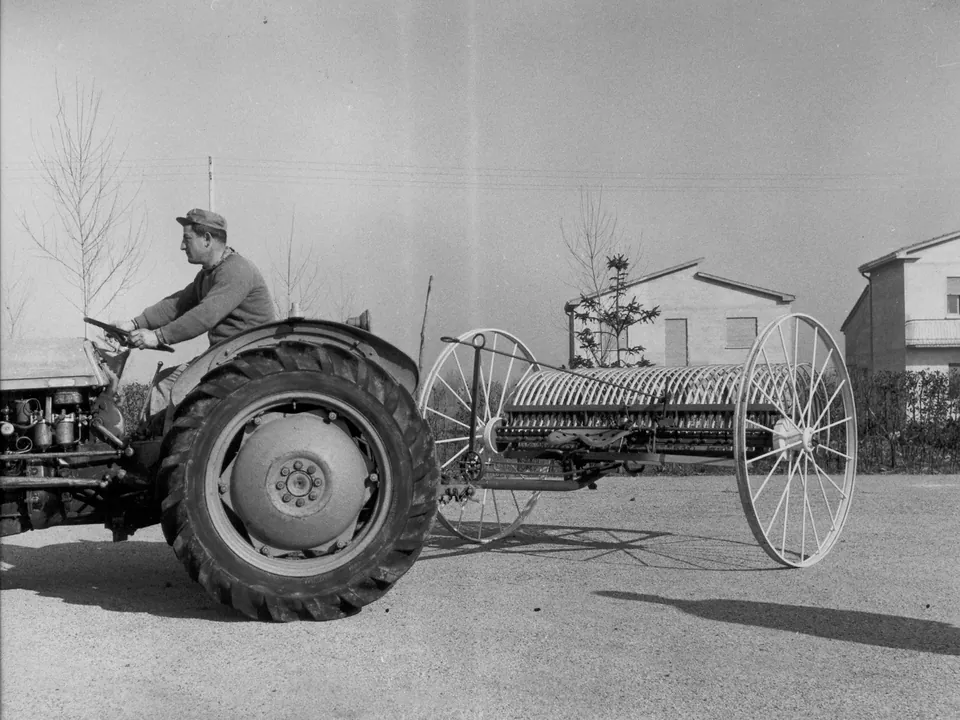
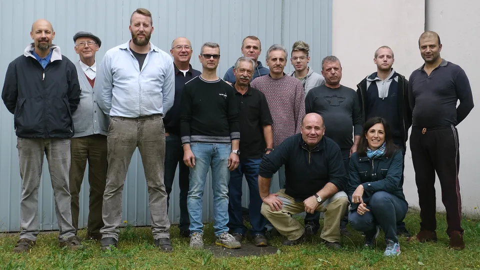
Contatti
Chiamateci o scriveteci
049 900 0103- Fax
- 049 900 0694
- Sede e officina
- Via Mestrina 10
35035 Arlesega di Mestrino (PD)Vai alla mappaIndicazioni stradali